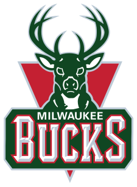
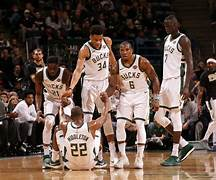

"MILWAUKEE BUCKS-ის ისტორია
მილუოკი ბაქსი (ინგლ. Milwaukee Bucks) — პროფესიონალური საკალათბურთო კლუბი, რომელიც ქალაქ მილუოკში, უისკონსინის შტატში მდებარეობს.
ბაქსი არის წევრი ცენტრალური დივიზიონის, რომელიც აღმოსავლეთ კონფერენციას ეკუთვნის ნაციონალურ საკალათბურთო ასოციაციაში (NBA).
გუნდი შეიქმნა 1968 წელს, როგორც ლიგის დამატებითი გუნდი, რომელიც ახლა BMO Harris Bradley Center-ში ატარებს საშინაო მატჩებს.
აშშ სენატორი ჰერბ კოლი არის გუნდის მფლობელი სკოტ სკილზთან ერთად,
რომლებსაც როგორც მთავარი მწვრთნელის, ასევე გენერალური მენეჯერის პოსტზე ჯონ ჰემონდი ჰყავთ დანიშნული.
ბაქსმა არსებობის მანძილზე ორჯერ შეძლო NBA ჩემპიონის ტიტულის მოპოვება (1971 და 2021), ორჯერ მოახერხა კონფერენციის ტიტულის მოგება (1971, 1974),
ასევე 13 დივიზიონის ტიტული (1971, 1972, 1973, 1974, 1976, 1980, 1981, 1982, 1983, 1984, 1985, 1986, 2001). გუნდი დაკავშირებულია ისეთ მოთამაშეებთან,
როგორებიც არიან კარიმ აბდულ-ჯაბარი, ოსკარ რობერტსონი, ბობ ლენიერი, რეი ალენი, მაიკლ რიდი, ენდრუ ბოგატი და ჯონ მაკგლოკინი.
გუნდის შექმნა
მილუოკი ბაქსი შეიქმნა 1968 წლის იანვარში, როდესაც NBA დაასაჩუქრა მილუოკის პროფესიონალური სპორტი და სერვისი გუნდის შექმნით,
ჯგუფს კი უესლი პავალონი და მერვინ ფიშმენი ლიდერობდნენ. გუნდმა NBA რეგულარული სეზონის პირველი მატჩი ჩიკაგო ბულზის წინააღმდეგ ჩაატარა მილუოკის არენაში,
სადაც თამაშს 8 467 მაყურებელი ესწრებოდა. როგორც ყველა ახლად დამატებული გუნდი, ბაქსის პირველი სეზონი 1968-69 წლების არეულობით და დიდი ბრძოლით დაიწყო.
გუნდის პირველი გამარჯვება მე-6 თამაშში მოვიდა, როდესაც ბაქსმა დეტროიტ პისტონსი 134-118 დაამარცხა. ბაქსმა გუნდის ისტორიის არსებობის პირველ წელს,
26 თამაშის მოგება მოახერხა. სეზონის დამთავრების შემდეგ, ბაქსმა გამოიმუშავა საშუალება, რომ აეგდოთ მონეტა, თუ ვინ მოიგებდა დრაფტის პირველ არჩევანს,
სადაც მისი მეტოქე ფინიქს სანსი იყო. ბაქსმა მოიგო არჩევანის უფლება, მაგრამ ამის შემდეგ უნდა მოეგო ფულადი სახსრებით ამერიკის საკალათბურთო ასოციაცია (ABA) გუნდისთვის.
1969-1975: კარიმ აბდულ-ჯაბარის ერა
არავინ ელოდა გუნდის 1969-70 წლების სეზონს. მათ ამ სეზონში 56-26 შედეგით დაასრულეს - რაც წინა სეზონთან შედარებით გაორმაგებული შედეგი იყო.
ეს შედეგი იყო საკმარისი გუნდის ლიგაში მე-2 ადგილის დასაკავებლად, რაც მხოლოდ ნიუ-იორკ ნიქსს ჩამოუვარდებოდა.
წინა სეზონთან შედარებით ბაქსმა 29 მოგებით გააუმჯობესა, რაც საუკეთესო მაჩვენებელი იყო ერთი სეზონის ნახტომით ლიგაში,
ეს რეკორდი კიდევ 10 წელი ხელ-შეუხებელი იყო, საბოლოოდ კი 1978-19 წლების სეზონში ბოსტონ სელტიქსმა 29 თამაში მოიგო,
ხოლო 1979-80 წლების სეზონში კი 61 მატჩი (რაც ახალბედა ლარი ბირდის დიდი დამსახურება იყო).
ბაქსმა შეძლო დაემარცხებინა აღმოსავლეთი კონფერენციის ნახევარ-ფინალში ფილადელფია სიქსერსი 5 თამაშში,
მაგრამ დამარცხდა კონფერენციის ფინალში ნიუ-იორკ ნიქსის წინააღმდეგ 5 თამაშში.
მომდევნო სეზონში, ბაქსს შეხვდა მოულოდნელი საჩუქარი, როდესაც მათ ოსკარ რობერტსონი აიყვანეს, ცნობილი როგორც „დიდი O“, ცინცინატი როიალზიდან.
გუნდის არსებობის მხოლოდ მესამე სეზონში, ბაქსმა 66-16 შედეგით დაასრულა რეგულარული სეზონი, რაც მეორე საუკეთესო მოგებითი შედეგი იყო NBA ისტორიაში იმ დროისთვის,
ასევე დღემდე საუკეთესო შედეგი გუნდის ისტორიაში. რეგულარული სეზონის განმავლობაში, ბაქსმა დაამყარა რეკორდი იმ დროს 20 თამაშიანი ზედიზედ გამარჯვებებით.
გუნდმა პლეი-ოფი 12-2 შედეგით დაასრულა და 1971 წლის 30 აპრილს მოიგო NBA ჩემპიონის ტიტული, როდესაც ბალტიმორ ბულეტსი 4-0 დაამარცხეს.
გუნდის არსებობის მანძილზე მხოლოდ მესამე სეზონში გამარჯვებული ჩემპიონობით, ბაქსი გახდა ყველაზე სწრაფი ახლად შექმნილი გუნდი NBA ისტორიაში,
რომელმაც მალევე მოახერხა ჩემპიონობის მოგება, თუმცა მას შემდეგ 4 დეკადის გასვლის მიუხედავად, გუნდის ისტორიაში ეს ტიტული კვლავ ერთადერთ გამარჯვებად რჩება.
1972 წელს, გუნდმა სეზონი 60 მოგებით დაასრულა, რაც იმ დროისთვის პირველი გუნდი იყო,
რომელმაც ასეთი მოგებებით დაიწყო. ამავე წელს, ლუ ალსინდორმა მიიღო ისლამი და შეიცვალა
სახელი - კარიმ აბდულ-ჯაბარი. მილუოკმა პლეი-ოფში დაამარცხეს უორიორსი 4-1, თუმცა დამარცხდნენ
კონფერენციის ფინალში ლოს-ანჯელეს ლეიკერსის წინააღმდეგ 2-4. ტრავმებმა ზეგავლენა მოახდინა გუნდის
1973 წლის სეზონზე, რის გამოც ვერ მოახერხეს პლეი-ოფში გასვლა, მაგრამ გუნდი დაბრუნდა NBA ფინალში
მომდევნო - 1974 წლის სეზონში, სადაც ბოსტონ სელტიქსის წინააღმდეგ აღმოჩნდა. მე-6 თამაშში, ჯაბარმა
ცალ-ხელით შორიდან ჩააგდო ფარში, რაც დაეხმარა გუნდს ორმაგი დამატებითი დრო, ბაქსის მოგებით დასრულებულიყო.
მაგრამ ბაქსმა წააგო მე-7 თამაში და დათმო ტიტული. 2012 წლის მონაცემებით, გუნდს იგივე წარმატება აღარ გაუმეორებია
და არ დაბრუნებულან NBA ფინალში. 1974-75 წლების სეზონი ჯაბარის ტრავმით დაიწყო, რასაც გუნდის მიერ 3-13 დაწყება მოჰყვა.
ჯაბარის დაბრუნების შემდეგ კი გუნდში სხვა წამყვანი მოთამაშეების ტრავმები მოჰყვა, რამაც გუნდი დივიზიონის ფსკერზე გაუშვა 38-44 შედეგით.
სეზონის დასრულების შემდეგ, ჯაბარმა განაცხადა, რომ აღარ სურდა ეთამაშა ბაქსის მაისურით, ასევე ამბობდა რომ სურდა დიდ ქალაქში გადასვლა.
მისი განცხადების თანახმად, ის ითხოვდა ლოს-ანჯელესის ან ნიუ-იორკის რიგებში გადასვლას. გუნდის პერსონალს არ შეეძლო მისი შენარჩუნება,
ამიტომ 1975 წლის 16 ივნისს, გუნდმა მეგა-გაცვლა მოახდინა, როდესაც ჯაბარი ლეიკერსში გაუშვა ელმორ სმიტის, ჯუნიორ ბრიჯმენის, ბრაიან უინტერის
და დევიდ მეიერსის ნაცვლად. საბოლოოდ ამ გაცვლამ, გუნდი მფლობელების შეცვლამდე მიიყვანა. ჯიმ ფიტზჯერალდმა, რომელიც ყველაზე დიდი წილს ფლობდა,
სურდა მისი წილის გაყიდვა. მიუხედავად დიდი წილის ქონისა, ფიტზჯერალდს არ შეეძლო გუნდის კონტროლი.

1976-1987: დონ ნელსონის ერა
მეგა-გაცვლის შემდეგ, გუნდს რამდენიმე დასამახსოვრებელი სეზონი ჰქონდა,
მაგრამ უმეტესწილად ეს კონკრეტულ მოთამაშეებზე იყო დამოკიდებული. ჯიმ ფიტზჯერალდმა
გუნდი გაყიდა 1976 წლისთვის, რითაც გუნდის ახალი ერა დაიწყო. ეს დაიწყო როდესაც გუნდის
მწვრთნელის რანგში 1976 წლის ნოემბერში მოვიდა დონ ნელსონი. 1977 წლის დრაფტზე, ბაქს ჰქონდა
3 პირველი რაუნდის არჩევნის უფლება, რაც მათ კენტ ბენსონის, მარკუს ჯონსონის და ერნი გრანფილდის
აყვანას მოახმარეს. ასევე 1979 წელს ახალბედის დებიუტი ჰქონდა სიდნი მონკრიფს.
1977 წლის 18 ოქტომბერს, როდესაც ბაქსი ლოს-ანჯელეს ლეიკერსის წინააღმდეგ თამაშობდა, რომელთა
რიგებშიც კარიმ აბდულ-ჯაბარი ირიცხებოდა უკვე, სადაც მას ბენსონი მეურვეობდა. ფარის ქვეშ, ჯაბართან
ბენსონი ძალიან აგრესიული იყო, რასაც საბოლოოდ ჯაბარის გაღიზიანება და დარტყმა მოჰყვა, თუმცა მისი ხელის
ტრავმა მოჰყვა ამას. საბოლოოდ ჯაბარი 5 000 აშშ დოლარით დაჯარიმდა, ასევე გამოტოვა შემდეგი 20 მატჩი. თუმცა
ასევე აღსანიშნავია, რომ ბენსონს მის წინააღმდეგ აგრესიულად აღარ უთამაშია. 1980 წლის თებერვალში, ბაქსმა კენტ
ბენსონი გაუშვა დეტროიტ პისტონსის რიგებში ვეტერანი ბობ ლენიერ ნაცვლად, რომელმაც მთელი არენა შეავსო, რაც ჯაბარის
წასვლის შემდეგ ეკლდა. გუნდმა 1980 წელს მოიგო შუა-დასავლეთ დივიზიონის ტიტული, თუმცა დამარცხებული იქნა
ნახევარ-ფინალში სიეტლ სუპერსონიქსის მიერ. სეზონის დასრულების შემდეგ, ბაქსი აღმოსავლეთი კონფერენციის ცენტრალურ დივიზიონში გადავიდა.
აქ გუნდმა ზედიზედ 6 დივიზიონის ტიტულის მოპოვება შეძლო, ხოლო 11 სეზონის განმავლობაში .500 მაჩვენებელი
ჰქონდა სეზონში. ამ წლების განმავლობაში, ბაქსი ერთ-ერთი მოწინავე გუნდი გახდა რაც მონკრიფის, პოლ პრესის,
კრეგ ჰოჯის და ტერი კამინგსის დამსახურება იყო. თუმცა მიუხედავად სამისა, გუნდი ვერ ახერხებდა NBA ფინალამდე
მისვლას, სადაც ყოველ ჯერზე სელტიქსის ან სიქსერსის მიერ იქნა გამოვარდნილი.
მფლობელების და არენის შეცვლა
1985 წელს, ფიტზჯერალდმა და მისმა პარტნიორებმა (ერთ-ერთი მათგანი სტიუარტ შედელი) გადაწყვიტეს ბაქსის გაყიდვა.
მას ჰქონდა ჯანმრთელობასთან დაკავშირებით პრობლემები, ამის გამო რამდენიმე მის ინვესტორს სურდა მისი გასვლა საქმიდან.
ბაქსს იმ დროისთვის ყველაზე პატარა არენა ჰქონდა NBA-ში, ხოლო ქალაქს არ სურდა ახალის აშენება. მილუოკელმა ბიზნესმენმა
(ამჟამად აშშ სენატორმა) ჰერბ კოლმა გადაწყვიტა გუნდის შეძენა, მიუხედავად იმისა რომ იყო შიში გუნდის ახალი მფლობელის
შესყიდვის შემდეგ მილუოკიდან გუნდის გადასვლის. სანამ ყველა დოკუმენტი გაფორმდებოდა, ჯეინი და ლოიდ პეტი, რომლებიც
მილუოკის გამომცხადებლები იყვნენ, გუნდის ახალ არენას ბრედლის ცენტრს უწოდებდნენ. 2003 წელს, კოლმა განაცხადა, რომ მან
გადაწყვიტა არ მიეყიდა გუნდი მაიკლ ჯორდანზე, ასევე "განაგრძობდა გუნდის მფლობელობას, გაუმჯობესებას და უისკონსინის შტატში მის გაფართოებას.
2012 წელს, არენამ გაყიდა სახელზე არსებული უფლებები BMO Harris Bank division of Bank of Montreal,
რომელმაც გუნდის საშინაო არენას BMO Harris Bradley Center დაარქვა.
 